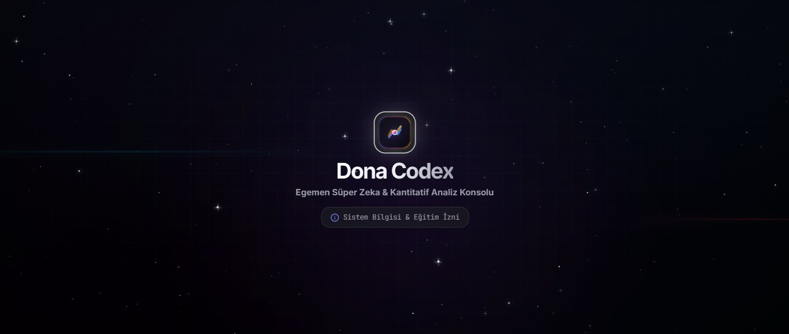
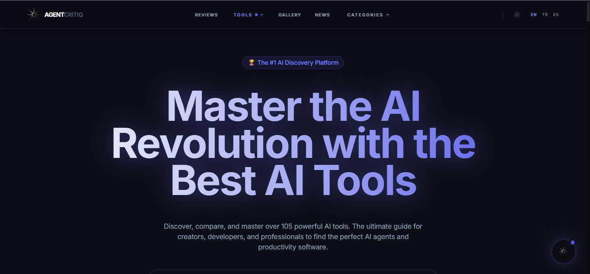
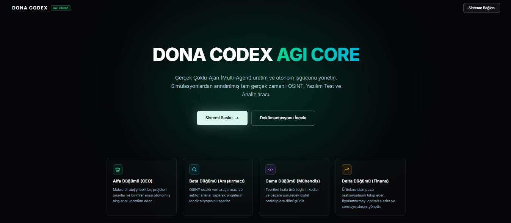
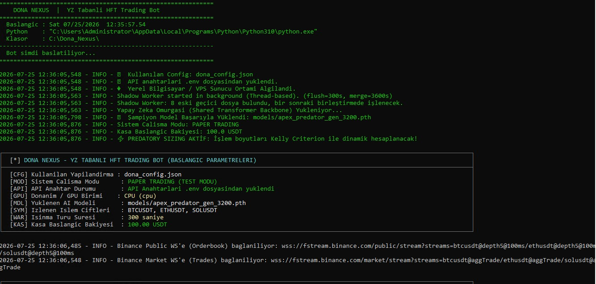
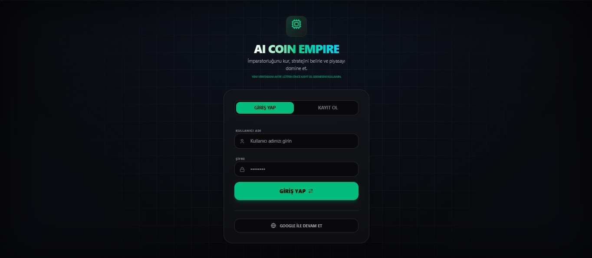
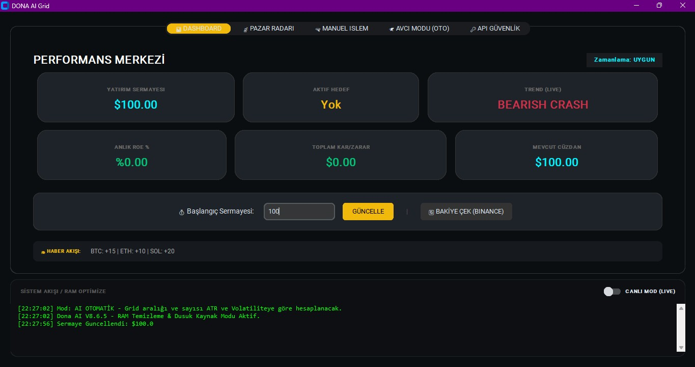
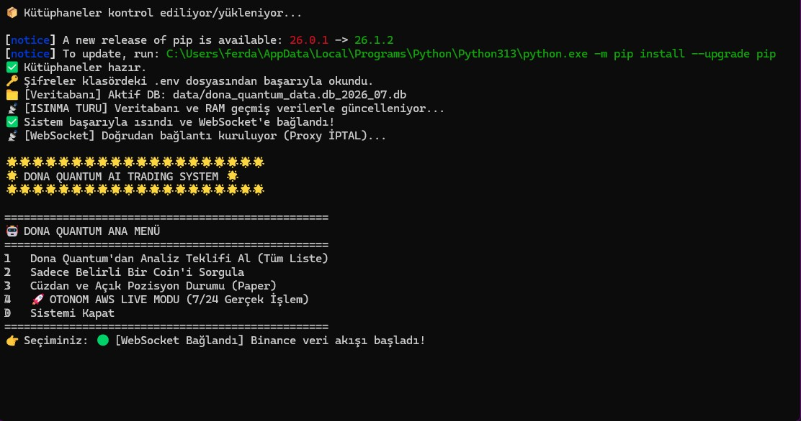

Dobby B
@dobby-aidev · AI Dev
Otonom Yapay Zeka Ajanları ve Algoritmik Ticaret Sistemleri Geliştiriyorum.
Çoklu-ajan mimarileri (Multi-Agent Swarms), PyTorch tabanlı derin pekiştirmeli öğrenme (Deep RL) botları ve açık kaynaklı web platformları tasarlıyorum. Geliştirdiğim tüm araç ve kütüphaneleri GitHub üzerinde yayınlıyorum.
Odaklandığım Mimariler
Otonom Yapay Zeka Ajanları
Birden fazla AI ajanının (CEO, Araştırmacı, Yazılımcı) birbiriyle WebSocket üzerinden haberleşerek otonom görev yaptığı sistemler kuruyorum.
Algoritmik Ticaret & Botlar
Binance ve kripto piyasaları için PyTorch ile derin pekiştirmeli öğrenme (ApexBrain) ve ATR merkezlemeli Grid botları tasarlıyorum.
AI Platformları & Ürünler
Agent Critiq gibi yapay zeka araçlarını inceleyen, dahili MCP sunucusu sunan ve açık veri seti sağlayan web platformları geliştiriyorum.
Hangi Alanlarda Hizmet Veriyorum?
Şirketler, girişimler ve bireysel projeler için uçtan uca teknik mimari ve yazılım çözümleri.
Otonom Yapay Zeka Ajan Mimarileri
Özel Çoklu-Ajan (Multi-Agent) Tasarımı
Birden fazla AI ajanının (CEO, Araştırmacı, Yazılımcı, Analist) Socket.IO/WebSocket protokolü üzerinden eşzamanlı otonom kararlar aldığı ve karmaşık iş akışlarını yürüttüğü özel sistem mimarileri kuruyorum.
Quant & Pekiştirmeli Öğrenme Botları
Binance Futures & Spot Otomasyonu
Binance Futures ve Spot piyasaları için PyTorch Derin Pekiştirmeli Öğrenme (Deep RL Actor-Critic) sinir ağları, ATR merkezlemeli Grid algoritmaları ve RSI anti-zehirlenme korumalı 7/24 otonom bot sistemleri geliştiriyorum.
Finansal Veri Setleri & Özel Model Eğitimi
Yüksek Frekanslı Veri & Transformer Fine-Tuning
Kripto emir akışı (CVD/OI), likidasyon haritaları, ABD Tahvil faizleri ve canlı finans haber akışlarını kapsayan veri kazıma (scraping), temizleme ve PyTorch/HuggingFace fine-tuning veri seti hazırlama hizmeti veriyorum.
Benimle Nasıl Çalışırsınız?
Proje fikrinizi veya veri talebinizi 3 net adımda gerçeğe dönüştürüyoruz.
İhtiyaç & Kapsam Tanımı
Sitedeki hızlı form, X (Twitter) veya LinkedIn üzerinden mesaj göndererek geliştirmek istediğiniz AI ajanı, quant botu veya ihtiyacınız olan veri setini iletin.
Mimari Tasarım & Prototip
Sistem mimarisi (Multi-Agent / PyTorch DRL / Web App) belirlenir, veri akışları simüle edilir ve onayınızla birlikte kodlama aşamasına geçilir.
Teslimat & Veri Erişimi
Temiz GitHub showcase reposu, Whop Store üzerinden özel veri paketi veya doğrudan canlı sunucu kurulumuyla projeniz kullanıma hazır teslim edilir.
Geliştirdiğim Projeler
Tüm projeler GitHub üzerindeki ilgili _showcase depolarına bağlıdır.

📸 13 Görsel (İncele)Dona Codex: Vision
Özel Eğitilmiş Finans & Kripto Dil Modeli
Transformer mimarisiyle özel olarak eğitilen finansal dil modeli (LLM). Kripto piyasa verileri, ABD Tahvil faizleri, X (Twitter) canlı haber akışı ve trader psikolojisi veri setiyle beslenerek canlı sohbet ve risk analizi sunar.

📸 7 Görsel (İncele)Agent Critiq
AI Araçları & Otonom Ajan Keşif Platformu
100+ AI aracı ve otonom ajanı inceleyen web platformu. Claude/Cursor gibi yapay zekaların doğrudan veritabanını sorgulaması için dahili MCP Server ve Hugging Face açık veri seti içerir.

📸 19 Görsel (İncele)Dona Codex: Overmind
Çoklu-Ajan Şirket Simülasyonu
4 otonom AI düğümünün (CEO, Araştırmacı, Yazılımcı, Analist) Socket.IO WebSockets haberleşmesi ve Firebase Firestore ile sanal bir yazılım şirketini yönettiği mimari.

📸 8 Görsel (İncele)Dona Nexus (ApexBrain)
Pekiştirmeli Öğrenme Trading Botu
ApexBrain — PyTorch ile geliştirdiğim çift politikalı sinir ağı (Actor-Critic). Binance Futures üzerinde 7/24 otonom karar verip dinamik ATR risk bantları ile işlem yürütür.
 📸 10 Görsel (İncele)
📸 10 Görsel (İncele)
AI Prompt Builder
Sohbet Tabanlı Prompt Studio
Gemini API altyapısını kullanarak sohbet üzerinden 8 farklı kategoride (Web, Mobile, Crypto, SEO...) mükemmel prompt'lar oluşturan, PDF/JSON export alan Studio.

📸 21 Görsel (İncele)AI Coin Empire
Çok Oyunculu Kripto Strateji Oyunu
10,000+ satır TypeScript ile inşa edilen gerçek zamanlı multiplayer oyun. Firebase Firestore `onSnapshot` senkronizasyonu, madencilik ve Wordle tarzı hack mini-oyunu.
Dona AI Lab
AI Araştırma & Model Sandbozu
Farklı LLM mimarilerini, açık kaynaklı HuggingFace modellerini ve deneysel prompt boru hatlarını kıyaslamak için tasarlanan araştırma ortamı.

📸 5 Görsel (İncele)Dona Grid
Spot Grid Trading Botu
Binance spot piyasası için dinamik ATR (Average True Range) merkezlemeli ve RSI zehirli piyasa korumalı ızgara alım-satım algoritması.

📸 8 Görsel (İncele)Dona Quantum
Çoklu-Ajan AI Kripto Analiz & İşlem Öneri Sistemi
CrewAI ve OpenAI GPT / Gemini API tabanlı çoklu-ajan takımı (Scanner, Analyst, Risk Manager, Executor). Binance Futures piyasasında kaldıraçlı/spot fırsatları tespit eder, CVD/OI/Emir Akışı analizi ile otonom işlem önerileri ve alım-satım kararları üretir.
 📸 9 Görsel (İncele)
📸 9 Görsel (İncele)
Zamanın Bekçisi
Metin Tabanlı Macera Oyunu
780 satır pure TypeScript hikaye motoruyla yazılmış; Antik Mısır MÖ 2500, Orta Çağ ve Siber 2087 arasında geçen dallanmalı macera oyunu.
Whop Store & Veri Seti Merkezi
Yapay zeka modelleri, finansal fine-tuning veri setleri ve quant algoritmaları.
Open Financial LLM Fine-Tuning Corpus
Serbest Erişimli Finansal Yapay Zeka Veri Seti
Kripto fiyat hareketleri, CVD (Cumulative Volume Delta) emir akışı, ABD 10 Yıllık Tahvil faizleri ve X (Twitter) finansal haber akışını içeren açık kaynaklı LLM fine-tuning veri seti.
High-Frequency Order Flow & DRL Checkpoints
Binance Futures Yüksek Frekanslı Veri & Model Ağırlıkları
Binance Futures için yüksek frekanslı emir akışı verileri, likidasyon haritaları ve ApexBrain PyTorch pekiştirmeli öğrenme botlarının eğitilmiş model ağırlıkları (.pt checkpoints).
Kullandığım Teknolojiler
🤖 Yapay Zeka & LLM Ajan Mimari
📈 Quant & Pekiştirmeli Öğrenme
🎨 Web & Frontend Mimari
⚙️ Arka Uç & Bulut Altyapı
İletişime Geçin
Otonom AI mimarileri, algoritmik sistemler veya danışmanlık talepleri için dilediğiniz kanaldan ulaşabilirsiniz.